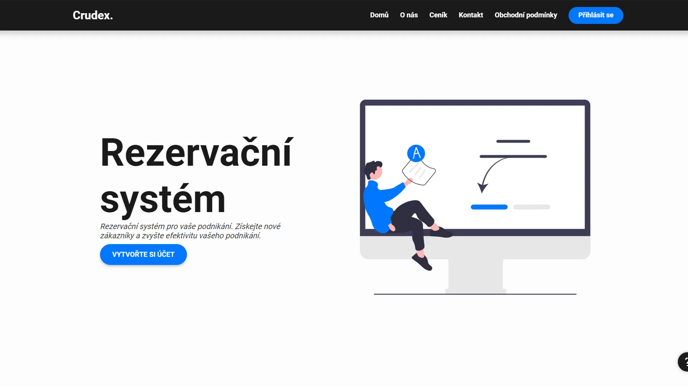
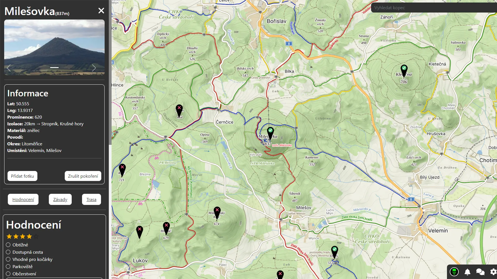
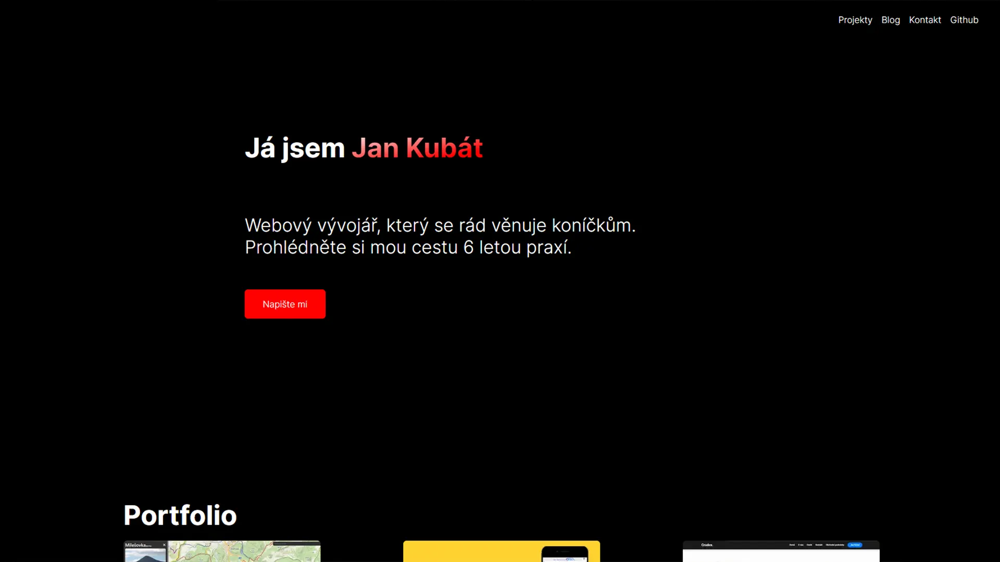
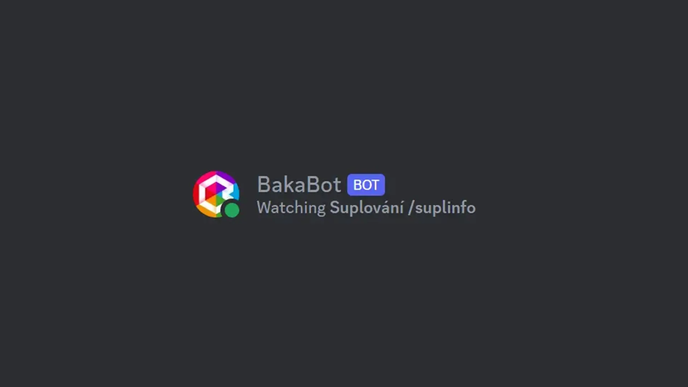
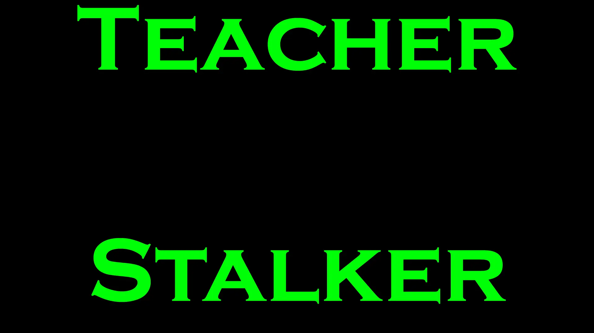

LamaTaxi
LamaTaxi je taxi služba pro Lovosice a okolí za výhodnou cenu. Jedná se o mobilní aplikaci, kde uživatel si
může objednat taxíka. Uživatel se hned dozví, kolik ho bude jízda přibližně stát, jak dlouho pojede a jak daleko pojede.
Tento projekt mě naučil jak vyvíjet aplikace s technologií Expo a React Native. Naučil jsem se také deployment aplikace
na Google Play a App Store. Což je velký "vopruz" pro člověka, co to nikdy nedělal.

SimpleReserve
SimpleReserve je rezervační systém pro malé a střední podnikatele. Jedná se o rezervace času, nikoliv stolů v restauraci.
Využití v tomto systému najdou salóny, holičství a veškeré služby, které závisí na času. Tento projekt jsem budoval v rámci
spolupráce se skupinou Crudex, které jsem součástí.

Kopcuj
Kopcuj byl mou ročníkovou prací 4. ročníku střední školy SPSUL. Kopcuj je nástroj pro lidi, kteří rádí turistikují po Českém středohoří.
Je to komunita, kde si člověk může zaznamenávat pokořené kopce, diskutovat s lidmi a hodnotit kopce. V období vývoje jsem rád chodil po těchto kopcích,
ale zapomínal jsem, kde jsem všude byl. Proto jsem začal s vývojem první verze v roce 2021. Následně jsem verzi 2 v roce 2022-2023 vyvíjel jako ročníkovou
práci.

jankubat-it.cz
Můj osobní web upravuju a šteluju už nějaký ten pátek. Konkrétně první verze mého osobního webu datují až do roku 2017. Ale pod jinou doménou.


TeacherStalker
TeacherStalker je velmi zajímavá NodeJS aplikace. TeacherStalker si pomocí údajů od Bakalářů získá všechny učitele a jejich pozice v rozvrhu.
Následně je zapíše do JSON souboru a vypíše na obrazovku. Nyní lze vyhledávat pomocí třídy, učitele, místnosti, patra či předmětu, kde se kdo nachází.
Tento projekt byl velice užitečný, když někdo hledal učitele. Tento systém je dělaný na míru pro SPSUL Bakaláře. Pokud by někdo chtěl přístup k projektu,
můžete mě kontaktovat.